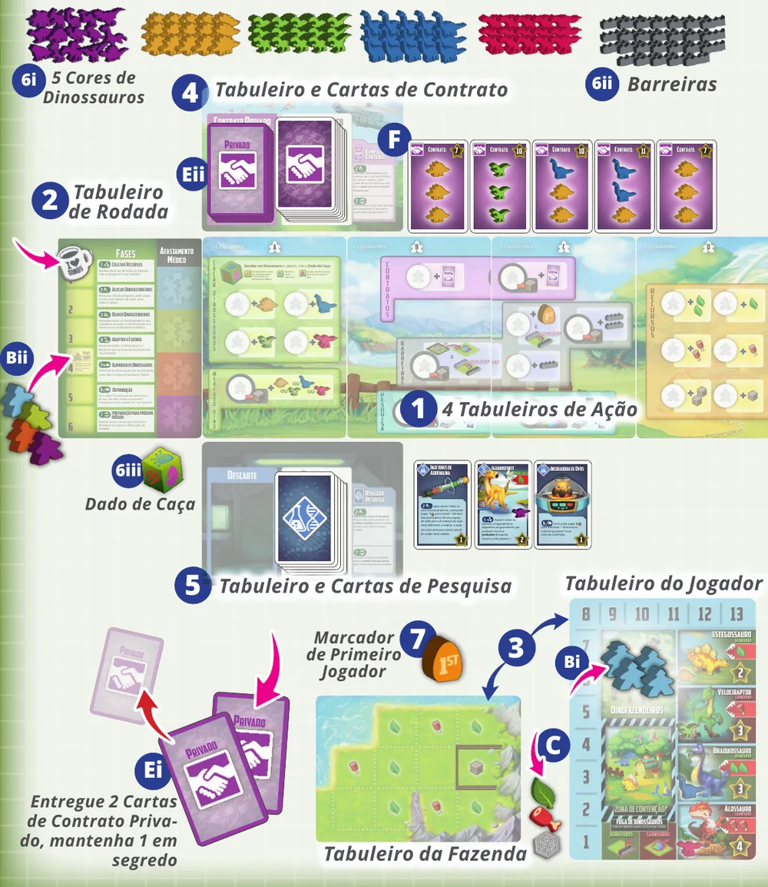
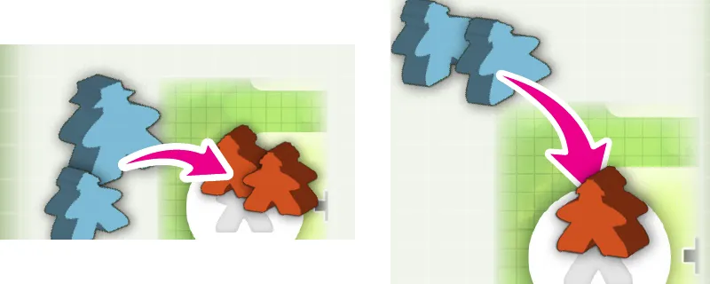
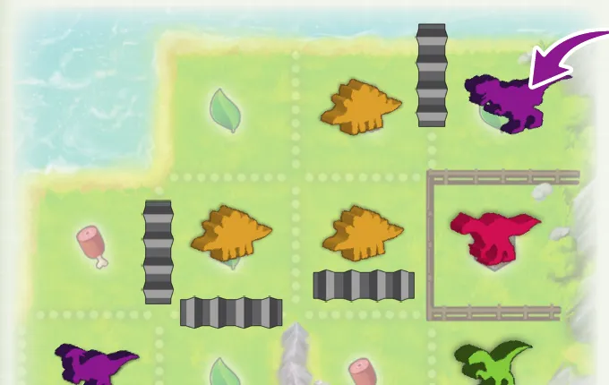
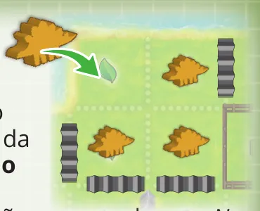
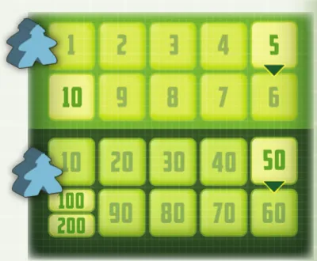

Para quem nunca jogou1 a 4 jogadores30 a 60 min14+Edição Meeple BR
· Redação Elite Boardgamers
Resumo em 1 minuto
Você manda Dinofazendeiros caçar dinossauros e cumprir contratos, guarda os dinossauros em Cercados e os alimenta, e vence quem somar mais pontos depois de 6 rodadas.
Na sua vez, você põe um Dinofazendeiro num espaço de ação; em espaço ocupado, entra com um a mais que quem tem mais ali, e o Capataz conta como 2.
Dinossauro comum só fica na Fazenda dentro de um Cercado de uma única espécie e precisa comer todo fim de rodada, senão foge com penalidade.
No fim da sexta rodada, contam os contratos cumpridos, as Cartas de Pesquisa e cada Dinossauro comum na Fazenda.
Como você aprende: 4 etapas, da mesa montada à contagem de pontosLeitura do essencial: cerca de 14 min
À vista, só o essencial para jogar. O que abre com + é explicação, exemplo, exercício ou regra de caso especial: abra quando precisar.
Comece a jogar em 4 minutos
Meta: em 4 minutos de leitura, montar a mesa e alocar o seu primeiro Dinofazendeiro sem abrir o manual.
A ideia do jogo
Você cuida de uma fazenda de dinossauros durante 6 rodadas. Em cada rodada, manda os seus Dinofazendeiros para os espaços de ação no centro da mesa, onde caça dinossauros, ganha recursos, pega cartas e cumpre contratos. Depois, cada um arruma a sua Fazenda: dinossauro comum precisa estar num Cercado e precisa comer, senão foge. Vence quem tiver mais pontos p. 6 e 13.
Monte a mesa
Na ordem. O marcado (depois) se monta já e se usa mais tarde p. 4 e 5.
No centro, os 4 Tabuleiros de Ação em fila, de A a D, com o lado que mostra o seu número de jogadores.
À esquerda deles, o Tabuleiro de Rodada, com o Marcador de Rodada (a caneca) no espaço 1.
Cada jogador pega um Tabuleiro de Fazenda, no lado que preferir, e um Tabuleiro de Jogador, no lado normal.
Cada jogador põe 3 Dinofazendeiros e o Capataz da sua cor no Tabuleiro de Jogador, e o quarto Dinofazendeiro no espaço 4 do Tabuleiro de Rodada (depois).
Os Marcadores de Planta, Carne e Suprimento ficam à esquerda da trilha de recursos: valem 0.
Acima dos Tabuleiros de Ação, o Tabuleiro de Contrato, com uma linha de Cartas de Contrato Público abertas: número de jogadores mais 1. Cada um recebe 2 Cartas de Contrato Privado, fica com 1 em segredo e devolve a outra (depois).
Abaixo, o Tabuleiro de Pesquisa, com 3 Cartas de Pesquisa abertas (depois).
Dinossauros e Barreiras ao alcance de todos; o Dado de Caça perto do Tabuleiro de Ação A.
Quem visitou por último um museu de história natural pega o Marcador de Primeiro Jogador. Em sentido horário a partir dele, o segundo jogador põe o Marcador de Planta no 1; o terceiro, o de Carne; o quarto, o de Suprimento.
Seu primeiro turno
A rodada começa com Coletar Recursos: 1 recurso por símbolo da Fazenda não coberto por dinossauro. Na primeira rodada, todos ganham 5 plantas, 3 carnes e 1 suprimento p. 6. Depois vem Alocar Dinofazendeiros, a partir de quem tem o Marcador de Primeiro Jogador p. 7 e 8:
Ponha 1 Dinofazendeiro, ou o Capataz, num espaço de ação vazio e faça a ação na hora.
Espaço ocupado: entra quem põe, de uma vez, 1 Dinofazendeiro a mais que o jogador que tem mais ali. O Capataz conta como 2.
Onde você já tem Dinofazendeiro, não pode pôr outro.
Círculo preto no espaço é custo: pague na hora.
A vez passa em sentido horário até todos alocarem todos.
A ação mais comum no começo é Caçar Dinossauros: você recebe o Dinossauro comum do espaço na Zona de Contenção do Tabuleiro de Jogador e rola o Dado de Caça. Rede: nada a mais. Ovo: mais um da mesma espécie. Dano: seus Dinofazendeiros desse espaço e o dinossauro vão para o Afastamento Médico, no Tabuleiro de Rodada, mas o dinossauro continua seu p. 8.
Ainda não precisa saber
As outras ações: etapa 2. Cercados, comida, fuga e reprodução, depois que todos alocam: etapa 3. A quarta rodada e a pontuação: etapa 4.
Como a partida acaba
No fim da sexta rodada, cada um soma os pontos dos contratos cumpridos, das Cartas de Pesquisa e dos Dinossauros comuns na Fazenda. Vence quem tiver mais p. 13.
Prefere ver? Vídeo de regras indicado na página do jogo da Meeple BR. Ele complementa este guia; em caso de diferença, vale o manual.
Você cria dinossauros numa ilha e os vende para quem paga mais p. 3. Cada jogador tem a sua Fazenda, um tabuleiro com espaços que produzem plantas, carnes e suprimentos, e uma Zona de Contenção, onde dinossauros e Barreiras novos esperam antes de entrar na Fazenda (p. 6 e 8 a 10).
São 6 rodadas, cada uma com 7 fases: Coletar Recursos; Alocar Dinofazendeiros; Reaver Dinofazendeiros; Adaptar a Fazenda; Alimentar os Dinossauros; Reprodução; Preparação para Próxima Rodada p. 6. Só a segunda é jogada em turnos, disputando os espaços de ação; nas outras, todos cuidam da própria Fazenda ao mesmo tempo.
A tensão do jogo: dinossauro dá pontos e é o que os contratos pedem, mas cobre um símbolo que produziria recurso e come todo fim de rodada. A Fazenda cheia produz menos comida justamente quando precisa de mais p. 6 e 11.
1Como este guia ensinaOpcional
Abrir esta seção
São quatro etapas, cada uma uma parte real da partida: montar a mesa; coletar e alocar; cuidar da Fazenda; fechar rodadas e a partida. Cada etapa tem Para entender (por que funciona assim), Passo a passo (a regra exata, com a página do manual), Regra adicional (casos que não acontecem sempre) e tarefas com ajuda decrescente: um exemplo resolvido, uma tarefa para completar e uma sem ajuda. Cada pergunta tem opções: escolha uma, e aparecem a resposta certa e a explicação. No final, uma avaliação diz o que reler, e uma folha de consulta vai para a mesa.
2Etapa 1: montar a mesa
Por que funciona assim
Dinossauro comum
Tipo
Come por rodada
Pontos no fim
Estegossauro
Herbívoro
1 planta
2
Velociraptor
Carnívoro
1 carne
3
Braquiossauro
Herbívoro
2 plantas
3
Alossauro
Carnívoro
2 carnes
4
Valores lidos nos quadros do Tabuleiro de Jogador, na ilustração da p. 5.

A mesa montada: os 4 Tabuleiros de Ação no centro, o Tabuleiro de Rodada à esquerda, o de Contrato em cima, com a linha de Contratos Públicos, e o de Pesquisa embaixo; à direita, a Fazenda e o Tabuleiro de Jogador, com os Dinofazendeiros e o quadro de cada dinossauro. Ilustração: manual Meeple BR p. 5Ver um exemplo resolvidoPratique esta etapa: exercícios com respostas
3Etapa 2: coletar e alocar Dinofazendeiros
Por que funciona assim

Dois espaços ocupados: à esquerda, o laranja tem 2 Dinofazendeiros, e o azul entra com 3, usando o Capataz e um Dinofazendeiro normal; à direita, o laranja tem 1, e o azul entra com 2. Ilustração: manual Meeple BR p. 7Regra adicional: Contrato PrivadoRegra adicional: Mova um Dinossauro de sua Zona de ContençãoRegra adicional: Redistribuir BarreirasRegra adicional: Espaço com duas açõesRegra adicional: Contrato com Dinossauro ÚnicoVer um exemplo resolvidoPratique esta etapa: exercícios com respostas
4Etapa 3: cuidar da Fazenda
Por que funciona assim

Uma Fazenda arrumada: Estegossauros num Cercado fechado por Barreiras, Água e Montanha, um Alossauro no Cercado permanente e Dinossauros Únicos, em roxo, nas áreas abertas. Ilustração: manual Meeple BR p. 10Regra adicional: Carnívoro come quem ia fugirRegra adicional: Dinossauro Único que foge

Reprodução: 3 Estegossauros no mesmo Cercado geram só 1 filhote, posto no espaço livre. Ilustração: manual Meeple BR p. 12Regra adicional: Estoque acabouVer um exemplo resolvidoPratique esta etapa: exercícios com respostas
5Etapa 4: fechar a rodada e a partida
Por que funciona assim

A trilha de pontuação no verso do Tabuleiro de Rodada, com uma faixa de 1 a 10 e outra de 10 a 100, mais o espaço 100/200; os pontos são marcados com Dinofazendeiros. Ilustração: manual Meeple BR p. 13Regra adicional: Onívoros na pontuaçãoVer um exemplo resolvidoDicaPratique esta etapa: exercícios com respostas
6Situações especiaisOpcional
Abrir esta seção
Cartas de Pesquisa. Há dois tipos, Ciência e Genética, e as duas dão uma habilidade e pontos no fim. A de Genética também traz um Dinossauro Único, que precisa ser alimentado p. 12. A habilidade de Ciência funciona já na rodada em que você pegou a carta; a de Genética, só enquanto o Dinossauro Único estiver na Fazenda, não na Zona de Contenção p. 12 e 19. Exemplos da p. 12: a Incubadora de Ovos deixa pagar 2 suprimentos na Reprodução para pôr 1 Dinossauro comum qualquer na Zona de Contenção; o Anquilossauro faz quem tomar de você o Marcador de Primeiro Jogador pagar a você 2 carnes.
Dinossauros Únicos na Fazenda. Não precisam de Cercado e podem ficar nas áreas abertas, junto de outros Únicos. Não ficam em Cercado com Dinossauros comuns e, em geral, não se reproduzem p. 10 e 12.
Onívoros comem planta ou carne, à sua escolha. Se um fugir, você escolhe qual penalidade ele causa p. 11 e 19.
Sobre a edição: Pontos que o manual deixa abertosSobre a edição: Duas frases que parecem se contradizer
Modo solo. Você joga contra uma Fazenda Rival automática, que usa o verso de um Tabuleiro de Jogador e as 8 Cartas de Fazendeiro Rival (p. 14 a 19). O resto do guia vale para você; o Rival só segue o que está abaixo.
7Avaliação finalOpcional
Abrir esta seção
Responda sem consultar. Cada resposta diz o que reler.
1. Partida de 3. Quantos Contratos Públicos ficam abertos, e quem ganha bônus inicial?
4 (3 mais 1). Segundo jogador, planta no 1; terceiro, carne no 1 p. 4 e 5. Releia a etapa 1.
2. Um adversário tem o Capataz e 1 Dinofazendeiro num espaço. De quantos você precisa para entrar?
O Capataz vale 2, mais 1: ele tem 3. Você precisa de 4p. 7. Releia a etapa 2.
3. Você rolou Dano ao caçar um Velociraptor. Com o que fica?
A caça sempre dá pelo menos 1 dinossauro; ele espera no Afastamento Médico p. 8, 10 e 19. Releia a etapa 2.
4. Você pode cumprir só o seu Contrato Privado, sem um Público?
Não. O Privado só vem logo depois de um Público p. 9 e 19. Releia a etapa 2.
5. Um Cercado de 2 espaços tem 1 Estegossauro. Um Velociraptor pode ocupar o espaço livre?
Não. Cada Cercado guarda uma única espécie p. 10. Releia a etapa 3.
6. Na mesma rodada, fogem 2 Alossauros. Quantos outros dinossauros você descarta?
1. A Penalidade de Fuga dos Carnívoros acontece uma vez por rodada p. 11 e 19. Releia a etapa 3.
7. Um Cercado fechado tem 3 Braquiossauros alimentados, e não há lugar em nenhum Cercado. O que acontece na Reprodução?
Cada 2 geram 1; sem lugar, o recém-nascido foge, e a fuga de herbívoro tira 1 Barreira se essa penalidade ainda não aconteceu na rodada p. 11 e 12. Releia a etapa 3.
8. No fim, um jogador tem na Fazenda 2 Velociraptores, 1 Braquiossauro e 1 Dinossauro Único. Quanto valem pela contagem dos Dinossauros comuns?
2 x 3 + 3 = 9. O Único conta pela Carta de Pesquisa p. 13. Releia a etapa 4.
8Para consultar durante a partida
Preparação: Tabuleiros de Ação de A a D, no lado do número de jogadores. Contratos Públicos abertos: jogadores mais 1. Cada um: 1 Contrato Privado secreto; Capataz e 3 Dinofazendeiros no tabuleiro; o quarto no espaço 4 do Tabuleiro de Rodada. Bônus: 2º jogador planta no 1, 3º carne no 1, 4º suprimento no 1.
A rodada (6 rodadas)
Coletar Recursos: 1 por símbolo descoberto, até 13 de cada. Rodada 1: 5 plantas, 3 carnes, 1 suprimento.
Alocar Dinofazendeiros: um espaço por vez, do primeiro jogador em sentido horário. Ocupado: 1 a mais que quem tem mais; Capataz = 2. Nunca onde já tem peça sua. Custo na hora. Só onde consegue fazer a ação.
Reaver Dinofazendeiros: tudo volta; dinossauro do Afastamento Médico vai para a Zona de Contenção.
Adaptar a Fazenda: tudo da Zona de Contenção para a Fazenda. Barreiras nas linhas pontilhadas; as antigas não se movem. Uma espécie por Cercado, 1 por espaço. Comum fora de Cercado foge.
Alimentar os Dinossauros: Estegossauro 1 planta, Braquiossauro 2 plantas, Velociraptor 1 carne, Alossauro 2 carnes, Únicos pela carta. Sem comida, foge.
Reprodução: cada 2 iguais alimentados no mesmo Cercado fechado = 1 filhote, posto num Cercado; sem lugar, foge.
Preparação para Próxima Rodada: completar Contratos Públicos, trocar as 3 Cartas de Pesquisa, avançar a rodada. Rodada 4: quarto Dinofazendeiro e 1 Contrato Privado.
Ações: Caçar (dinossauro e dado: Rede nada, Ovo mais um, Dano Afastamento Médico). Mercado (paga, escolhe, sem dado). Recursos. Barreiras e Marcador de Primeiro Jogador. Mova um Dinossauro de sua Zona de Contenção. Redistribuir Barreiras. Contratos (só da Fazenda; Privado logo depois de um Público). Pesquisa (da linha, ou 3 do baralho e fica com 1).
Fuga (cada penalidade uma vez por rodada): herbívoro, tira 1 Barreira (Cercado aberto não reproduz); carnívoro, descarta outro dinossauro.
Fim: depois da 6ª rodada. Pontos: contratos, Cartas de Pesquisa, Dinossauros comuns na Fazenda (Estegossauro 2, Velociraptor 3, Braquiossauro 3, Alossauro 4). Empate: quem joga primeiro a partir do Marcador de Primeiro Jogador.
O FAQ oficial usado é o da p. 19 do próprio manual. Não foram encontrados errata nem FAQ separados até 01/11/2026.
Regras conferidas no manual da edição brasileira, "Regras da Fazenda" (Meeple BR, arquivo TEDinos_rulebook-PT-BR-2.01, de novembro de 2020, revisão de Leandro R. Fernandes, Márcio Botelho e Thiago Leite). As páginas citadas são as desse manual.